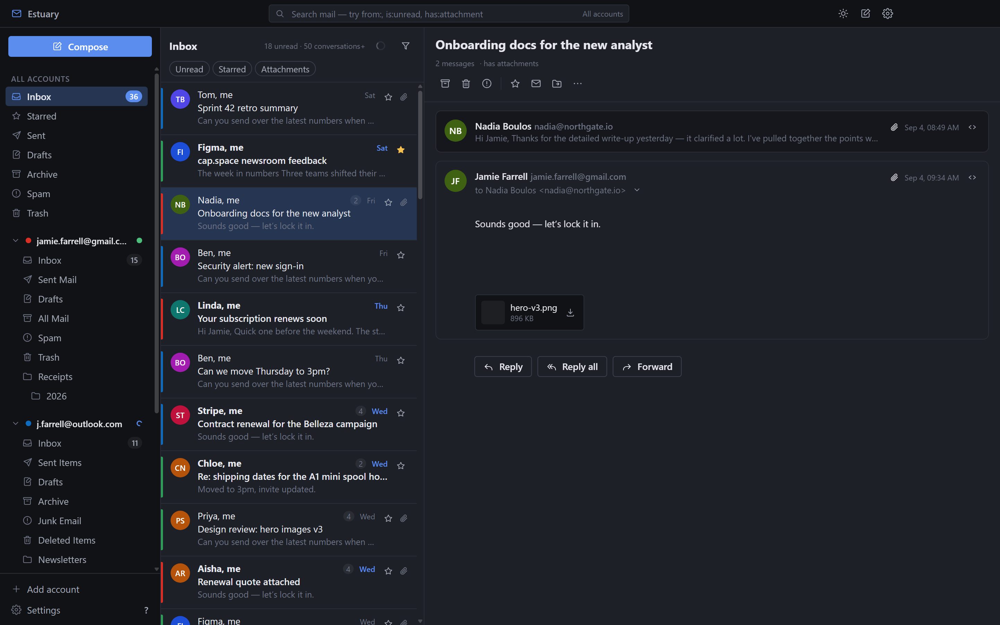
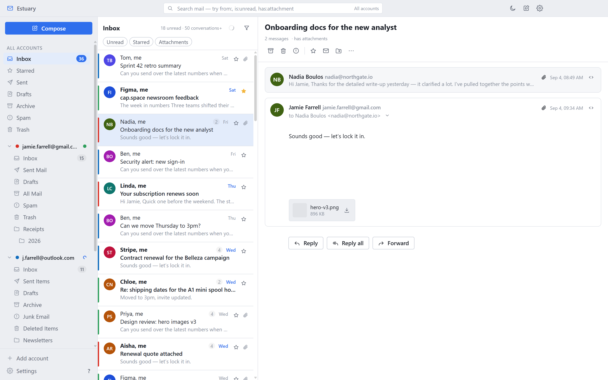
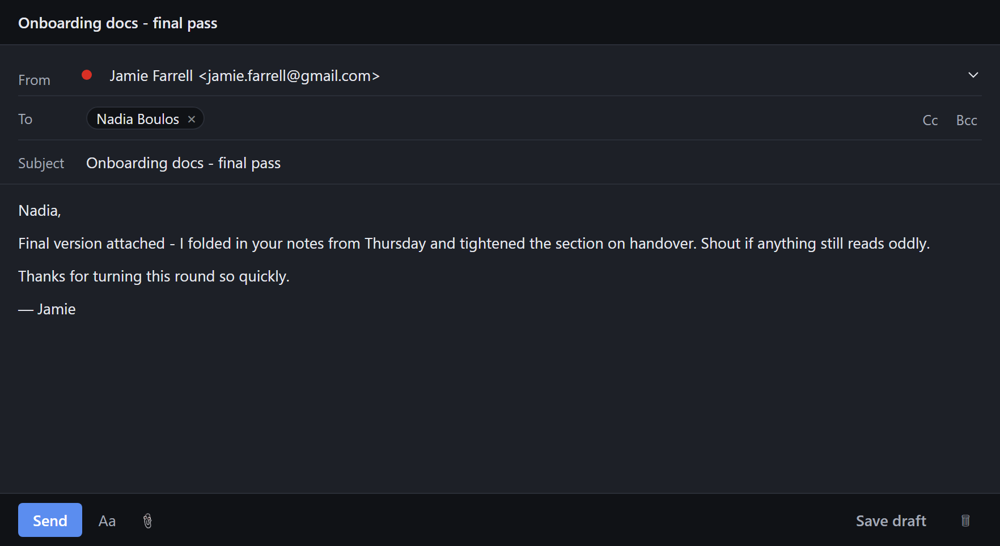

Estuary
Every inbox, one tide.
A free, open-source desktop email client for Windows that puts Gmail, Outlook, Spacemail and any other IMAP account into a single fast inbox — and keeps your mail on your own PC.
Heads up: the installer is not code-signed, so Windows may warn about an unrecognised app. Choose More info → Run anyway to continue. Every line of the build is on GitHub if you would rather compile it yourself.


What it does
A real mail client, not a wrapper around a web page
Estuary talks IMAP and SMTP directly, caches everything in a local SQLite database, and renders a native UI on top. That is why it is quick, and why it still works when the network is not.
One unified inbox
Gmail, Outlook / Microsoft 365, Spacemail, iCloud, Yahoo, Fastmail and any other IMAP server, merged into a single list ordered by date — or browsed one account at a time.
Actions that stick
Archive, delete, star, mark read, move and report spam apply instantly in the UI, then replay to the server. Archive means the right thing on every provider, Gmail included.
Proper threading
Conversations are stitched with Gmail's thread ids where available, and with References / In-Reply-To chains elsewhere, falling back to subject and participants.
Instant offline search
Search runs against the local cache, so results appear as you type — with from:, is:unread and has:attachment operators. No round trip, no waiting.
Compose with attachments
A rich-text composer in its own window, so it floats beside the inbox. Drag files in, reply and forward with quoted history, and save drafts back to the account.
Notifications & tray
New-mail notifications that open the conversation when clicked, a tray icon with an unread badge, close-to-tray, start-on-login, and mailto: link handling.
Your mail stays on your PC
No server of ours sits in the middle — there isn't one. Messages live in a local database, passwords and tokens are encrypted with Windows DPAPI, and nothing is tracked.
OAuth with your own client
Gmail and Outlook sign in through your system browser with PKCE, against an OAuth client you register yourself. Your credentials are never handed to anyone else's app.
In-app updates
Estuary checks GitHub Releases for a newer version, verifies the download's SHA-512 against the release manifest, and installs it without a UAC prompt.
The honest bit
How sign-in works
Estuary is a personal project, not a Google-verified product, so it does not ship with credentials of its own. Depending on the provider, that means one of three routes — and only two of them take any setup at all.
Most accounts no setup
Spacemail, iCloud, Yahoo, Fastmail and any IMAP server of your own: type the address, enter the password, done. Estuary fills in the server settings from its provider list, or discovers them from autoconfig and DNS.
Providers with two-factor authentication want an app password rather than your normal one; the account wizard links straight to the right page for each.
Gmail 5 minutes, or none
The quick route is a Google app password: turn on 2-Step Verification, generate a 16-character password, paste it in. Nothing else to set up.
The better route is OAuth — you create a free “Desktop app” OAuth client in Google Cloud under your own account and paste its client ID into Estuary once. Roughly ten minutes, and you never do it again.
Outlook / Microsoft 365 OAuth required
Microsoft switched off password authentication for IMAP and SMTP on personal accounts, and app passwords no longer work for mail. So Outlook needs an app registration in Entra — free, about ten minutes, and the guide walks through every screen.
Why you register the client, not me
Google and Microsoft tie mail access to a registered application. Shipping one set of credentials inside an open-source app would mean publishing them — and would route every user's consent through an identity you have no reason to trust. Registering your own takes ten minutes and keeps the app's access entirely between you and your provider.
Estuary uses the loopback flow from RFC 8252: your system browser opens, you
approve, and the code comes back to a one-shot listener on 127.0.0.1.
PKCE is always on and there is no embedded browser.
One caveat the guide covers in detail: leave your Google app in “Testing” and Google expires its refresh tokens after seven days, so Gmail will ask you to sign in again every week. Publishing the app — one click, no verification review — stops that.
Writing mail
Compose in its own window
Replies open beside the inbox rather than on top of it, so you can keep reading while you write. Rich text, attachments, Cc/Bcc, contact autocomplete from your own mail, and drafts that sync back to the account.

Questions
FAQ
Is it free?
Yes — free to download, free to use, MIT-licensed, and there is no paid tier, no account to create and nothing to subscribe to. The source is on GitHub and you are welcome to build it yourself.
Where is my mail stored?
On your PC, in %APPDATA%\Estuary — a SQLite database for messages,
threads, folders and settings, plus a folder of downloaded attachments.
Passwords and OAuth refresh tokens are encrypted with Windows DPAPI through
Electron's safeStorage and never leave the main process.
Estuary talks to your mail servers and, when you ask it to, to GitHub Releases to check for updates. There is no analytics, no telemetry and no server of mine anywhere in the path.
Which accounts can I add?
Gmail, Outlook.com / Hotmail / Live / Microsoft 365, Spacemail (Spaceship), iCloud, Yahoo, Fastmail — and any other server that speaks IMAP and SMTP. If Estuary does not recognise the domain it looks the settings up in Thunderbird's autoconfig database and in DNS, then lets you type them in by hand.
You can add as many accounts as you like; they all land in the same inbox.
Is there a Mac or Linux build?
Not yet. Windows comes first: it is what gets built, signed off and tested. The codebase is Electron and nothing in it is Windows-only apart from the DPAPI-backed secret storage, which has platform equivalents, so macOS and Linux builds are planned rather than ruled out.
Why does Windows warn me about the installer?
Because the build is not code-signed — a certificate costs several hundred pounds a year, which is hard to justify for a free project. SmartScreen flags anything it has not seen before. Choose More info → Run anyway, or build from source if you would rather not take my word for it.
How do updates work?
Estuary periodically checks the latest GitHub release for a manifest, compares versions, and offers the update. The installer it downloads is checked against the SHA-512 in that manifest before it runs, and it installs per-user, so there is no administrator prompt.
Give it your inboxes
One download, no account, nothing to cancel.